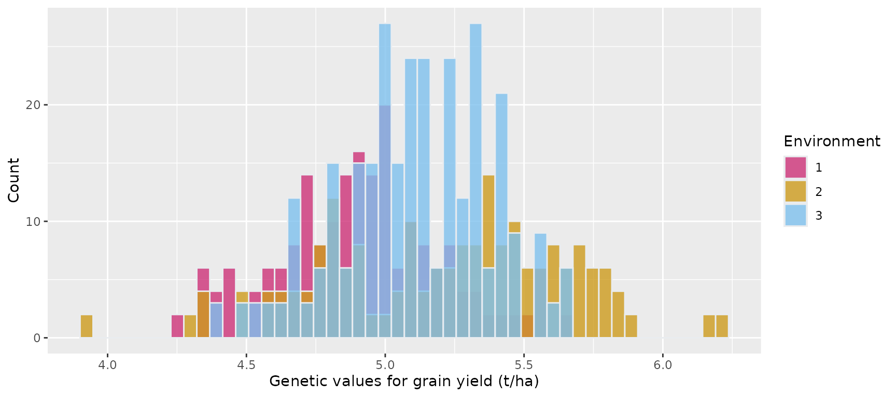

Simulation of genetic values based on an unstructured model for genotype-by-environment (GxE) interaction
Source:vignettes/unstructured_GxE_demo.Rmd
unstructured_GxE_demo.RmdBackground
This document demonstrates how to simulate genetic values for multiple traits in multiple environments based on an unstructured model for genotype-by-environment (GxE) interaction. While the simulation of genetic values is not directly implemented in ‘FieldSimR’, the package provides wrapper functions to facilitate the simulation of genetic values for multi-environment field trial settings employing the R package ‘AlphaSimR’. The two wrapper functions to simulate genetic values based on an unstructured model for GxE interaction are:
Note: ‘FieldSimR’ also provides wrapper functions to enable simulation of genetic values using a compound symmetry model for GxE interaction. This is demonstrated in the vignette on the Simulation of genetic values based on a compound symmetry model for genotype-by-environment (GxE) interaction.
The core function of ‘FieldSimR’ generates plot errors comprising 1) a spatially correlated error term, 2) a random error term, and 3) an extraneous error term. Spatially correlated errors are simulated using either bivariate interpolation, or a two-dimensional autoregressive process of order one (AR1:AR1). Through the combination of the plot errors with (simulated) genetic values, ‘FieldSimR’ enables simulation of multi-environment plant breeding trials at the plot. This is demonstrated in the vignette on the Simulation of plot errors and phenotypes in a plant breeding field trial.
Simulation of genetic values
We conceive a scenario in which 100 maize hybrids are measured for grain yield (t/ha) and plant height (cm) in three environments. The first and the third location include two replicates, and the third location includes three replicates.
The simulation process comprises three steps:
- Definition of the genetic architecture and the simulation parameters for the two traits.
- Simulation of a population of 100 hybrid genotypes.
- Generation of a data frame containing the simulated genetic values for grain yield and plant height in the three environments.
To provide a comprehensive overview of the unstructured modelling approach for GxE interaction, we assume additive and dominance gene action for both grain yield and plant height. Details on how ‘AlphaSimR’ simulates additive and non-additive biological effects can be found in the “Traits in AlphaSimR” vignette.
It should be noted, however, that a simple additive genetic model will be sufficient to answer most experimental questions and may be preferred to more complex models, especially if data to tune the simulation model is not available and the parameters are unknown.
1. Genetic architecture and simulation parameters of the two traits
First, we set the number of traits, the number of environments (e.g., locations), and the number of replicates tested within environments. We also define the number of genotypes in our founder population to be simulated, the number of chromosomes, and the number of segregating sites (biallelic QTN) per chromosome. Then, we set the additive genetic parameters, the dominance parameters, and the genetic correlation structures required to simulate the two traits in three environments based on an unstructured model for GxE interaction.
We create a founder population of 20 heterozygous genotypes. These founder genotypes will then be split into two heterotic pools, and one doubled haploid (DH) line will be produced from each founder. To generate hybrids, the two pools will be crossed using a factorial design.
ntraits <- 2 # Number of traits.
nenvs <- 3 # Number of environments.
nreps <- c(2, 2, 3) # Number of replicates tested within environments 1, 2 and 3.
nind <- 20 # Number of founder genotypes in the population.
nchr <- 10 # Number of chromosomes.
nseg_sites <- 200 # Number of QTN per chromosome.Additive genetic parameters
We define mean additive genetic values for all trait x environment combinations. The additive mean values are provided in a single vector with environments nested within traits. Grain yield is measured in tons per hectare (t/ha) and plant height is measured in centimetres (cm).
mean <- c(4.9, 5.4, 5.1, 235.2, 228.5, 239.1) # c(Yld:E1, Yld:E2, Yld:E3, Prt:E1, Prt:E2, Prt:E3)The genetic variances for the six trait x environment combinations can be set in two different ways.
- By providing a single vector with environments nested within traits
(similar to vector
mean). - By providing a vector of genetic variances for the two traits
(
T_var) and a second vector of genetic variances for the three environments (E_var), assuming a separable structure.
We choose the first option and provide a single vector of variances.
var <- c(0.085, 0.12, 0.06, 15.1, 8.5, 11.7) # c(Yld:E1, Yld:E2, Yld:E3, Pht:E1, Pht:E2, Pht:E3)Dominance genetic parameters
We assume mean dominance degrees of 0.4 for grain yield and 0.1 for plant height in all three environments, respectively. The dominance degree variance is set to 0.2 for both traits in the three environments.
meanDD <- c(0.4, 0.4, 0.4, 0.1, 0.1, 0.1) # c(Yld:E1, Yld:E2, Yld:E3, Pht:E1, Pht:E2, Pht:E3)
varDD <- 0.2 # Same value set for all environment-within-trait combinationsGenetic correlation structures
Additive and non-additive genetic correlations between all trait x environment combinations can be defined in two ways:
- By providing a single correlation structure
(
corA). - By providing a matrix of genetic correlations between traits
(
TcorA) and a matrix of genetic correlations between environments (EcorA), assuming a separable correlation structure.
We choose the second option and assume a separable additive genetic correlation structure. This simplifies the generation of the additive correlation matrix, especially when the number of environments and/or traits is high.
TcorA <- matrix( # Matrix of additive genetic correlations between the two traits.
c(
1.0, 0.6,
0.6, 1.0
),
ncol = 2
)#> [,1] [,2]
#> [1,] 1.0 0.6
#> [2,] 0.6 1.0
EcorA <- matrix(
c( # Matrix of additive genetic correlations between the three environments.
1.0, 0.4, 0.6,
0.4, 1.0, 0.5,
0.6, 0.5, 1.0
),
ncol = 3
)#> [,1] [,2] [,3]
#> [1,] 1.0 0.4 0.6
#> [2,] 0.4 1.0 0.5
#> [3,] 0.6 0.5 1.0Alternatively, the function rand_cor_mat() provides a
quick means to generate random correlation matrices. The correlations
are sampled within a defined range of values.
corA <- rand_cor_mat( # Additive genetic correlation structure.
(ntraits * nenvs), # Could be used instead of TcorA and EcorA.
min.cor = 0.1,
max.cor = 0.9,
pos.def = TRUE
)
round(corA, 2)
#> 1 2 3 4 5 6
#> 1 1.00 0.17 0.74 0.59 0.25 0.10
#> 2 0.17 1.00 0.46 0.50 0.34 0.68
#> 3 0.74 0.46 1.00 0.68 0.74 0.27
#> 4 0.59 0.50 0.68 1.00 0.15 0.34
#> 5 0.25 0.34 0.74 0.15 1.00 0.40
#> 6 0.10 0.68 0.27 0.34 0.40 1.00Furthermore, we assume independence between the dominance degrees of the six trait-by-environment combinations. Therefore, we generate a 6x6 diagonal matrix (although this is not strictly necessary. A diagonal matrix is constructed by default if no correlation matrix is provided).
corDD <- diag(6)#> [,1] [,2] [,3] [,4] [,5] [,6]
#> [1,] 1 0 0 0 0 0
#> [2,] 0 1 0 0 0 0
#> [3,] 0 0 1 0 0 0
#> [4,] 0 0 0 1 0 0
#> [5,] 0 0 0 0 1 0
#> [6,] 0 0 0 0 0 1Input parameter list
Once we have defined all simulation parameters, we use the function
unstr_asr_input() to prepare them into a list that is used
with ‘AlphaSimR’ to
simulate correlated genetic values based on an unstructured model for
GxE interaction.
input_asr <- unstr_asr_input(
ntraits = ntraits,
nenvs = nenvs,
mean = mean,
var = var,
TcorA = TcorA,
EcorA = EcorA,
meanDD = meanDD,
varDD = varDD,
corDD = corDD
)Note: The object input_asr should not
be modified and must be used directly with ‘AlphaSimR’ as
demonstrated below.
2. Simulation of a population of genotypes
Our list of simulation parameters input_asr is now used
with ‘AlphaSimR’ to
simulate correlated genetic values for 100 maize hybrid genotypes tested
for two traits in three environments based on an unstructured model for
GxE interaction.
First, we simulate a population of 20 heterozygous maize
founder genotypes using the function runMacs in ‘AlphaSimR’.
founders <- runMacs( # Simulation of founder genotypes using AlphaSimR's "MAIZE" presets
nInd = nind, # to mimic the species' evolutionary history.
nChr = nchr,
segSites = nseg_sites,
inbred = FALSE,
species = "MAIZE",
nThreads = 2
)
SP <- SimParam$new(founders)Then, we use the simulation parameters stored in
input_asr to simulate correlated genetic values for
grain yield and plant height in three testing environments.
SP$addTraitAD( # Additive + dominance trait simulation.
nQtlPerChr = nseg_sites,
mean = input_asr$mean,
var = input_asr$var,
corA = input_asr$corA,
meanDD = input_asr$meanDD,
varDD = input_asr$varDD,
corDD = input_asr$corDD,
useVarA = FALSE
)
founders <- newPop(founders)We now split the simulated founders into two heterotic pools A and B. We create one DH line per founder, which gives us 10 DH lines per heterotic pool. Hybrids are then generated by crossing pool A and pool B in a factorial manner (all pairwise combinations), resulting in 100 hybrid genotypes
pool_A <- makeDH(founders[1:10], nDH = 1) # Pool A: 1 DH line from founders 1 to 10, respectively.
pool_B <- makeDH(founders[11:20], nDH = 1) # Pool B: 1 DH line from founders 11 to 20, respectively.
dh_lines <- mergePops(list(pool_A, pool_B))
factorial_plan <- as.matrix(expand.grid(A = pool_A@id, B = pool_B@id)) # Factorial crossing plan.
hybrid_pop <- makeCross(pop = dh_lines, crossPlan = factorial_plan, nProgeny = 1) # Hybrid genotypes.3. Generation of a data frame with simulated genetic values
In the last step, we use the function unstr_asr_output()
to extract the simulated genetic values from the ‘AlphaSimR’
population object hybrid_pop and store them in a data
frame.
gv_df <- unstr_asr_output(
pop = hybrid_pop,
ntraits = ntraits,
nenvs = nenvs,
nreps = nreps
)#> env id rep gv.Trait1 gv.Trait2
#> 1 1 41 1 5.135440 241.6967
#> 2 1 42 1 4.941166 242.0755
#> 3 1 43 1 4.963438 238.0766
#> 4 1 44 1 4.911714 237.0087
#> 5 1 45 1 5.108014 238.7757
#> 6 1 46 1 4.931817 233.8303Histogram showing the genetic values of the 100 maize hybrids for grain yield in the three environments
ggplot(gv_df, aes(x = gv.Trait1, fill = factor(env))) +
geom_histogram(color = "#e9ecef", alpha = 0.8, position = "identity", bins = 50) +
scale_fill_manual(values = c("violetred3", "goldenrod3", "skyblue2")) +
labs(x = "Genetic values for grain yield (t/ha)", y = "Count", fill = "Environment")
The simulated genetic values for grain yield and plant height measured at three environments can now be combined with plot errors to generate plant breeding trial phenotype plot data. We provide an example on how to do that in the vignette Simulation of plot errors and phenotypes in a plant breeding field trial.